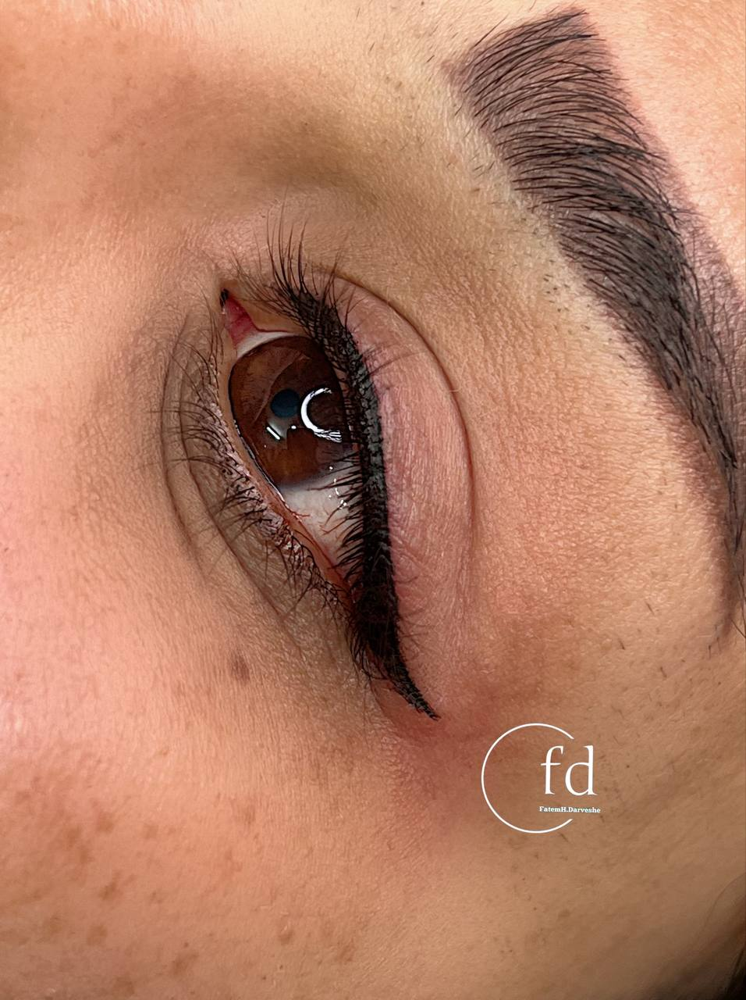

آیا خط چشم دائم درد دارد؟ پاسخ به تمام نگرانیهای شما
نوشته شده در تاریخ ۱۵ تیر ۱۴۰۴
داشتن چشمانی گیرا و جذاب بدون نیاز به آرایش روزانه، آرزوی بسیاری از خانمهاست. خط چشم دائم این آرزو را برآورده میکند، اما یک سوال بزرگ همیشه ذهن متقاضیان را درگیر میکند: **آیا این کار دردناک است؟** ترس از درد، بزرگترین مانع برای تصمیمگیری است. در این مقاله میخواهم به صورت کاملاً صادقانه و شفاف به این نگرانی پاسخ دهم و به شما اطمینان دهم که این فرآیند بسیار راحتتر از چیزی است که فکرش را میکنید.
صادقانه بگوییم: چه حسی دارد؟
بیایید رو راست باشیم. ناحیه پلک یکی از حساسترین نقاط بدن است. اما این به معنی یک تجربه دردناک نیست. اکثر مشتریان من این حس را نه به عنوان "درد"، بلکه به عنوان یک **"لرزش یا قلقلک خفیف"** روی پلک توصیف میکنند. دلیل این راحتی، استفاده از تکنیکهای مدرن و مواد بیحسی بسیار قوی است.
مهم است بدانید که آستانه تحمل درد در افراد مختلف متفاوت است، اما هدف ما به عنوان متخصص، رساندن حس ناراحتی شما به نزدیک صفر است.
جادوی بیحسیهای موضعی
کلید یک تجربه راحت و بدون استرس، در استفاده صحیح از کرمها و پمادهای بیحسی موضعی است. ما این فرآیند را در دو مرحله انجام میدهیم:
- قبل از شروع کار: حدود ۲۰ تا ۳۰ دقیقه قبل از شروع، از یک پماد بیحسی بسیار قوی روی پلکهای شما استفاده میشود تا پوست کاملاً برای شروع کار آماده شود.
- حین انجام کار: در حین فرآیند نیز از مواد بیحسی مایع مخصوص استفاده میشود تا اطمینان حاصل شود که شما در تمام طول کار راحت هستید.
چگونه خود را برای یک تجربه راحت آماده کنیم؟
شما هم میتوانید با رعایت چند نکته ساده، به کاهش هرگونه حس ناخوشایند کمک کنید:
- پرهیز از کافئین: در روز انجام کار، از نوشیدن قهوه، چای و نوشیدنیهای انرژیزا خودداری کنید. کافئین میتواند حساسیت پوست را کمی افزایش دهد.
- آرامش خود را حفظ کنید: استرس میتواند آستانه تحمل درد را پایین بیاورد. با اطمینان به من و تخصصم، سعی کنید آرام باشید. گوش دادن به موسیقی ملایم در حین کار نیز میتواند کمککننده باشد.
- زمانبندی مناسب: سعی کنید نوبت خود را در زمانی رزرو کنید که در دوره عادت ماهانه خود نیستید، زیرا در این دوران حساسیت بدن کمی بیشتر است.
ورم و دوران نقاهت چقدر طول میکشد؟
داشتن کمی ورم و قرمزی خفیف در ناحیه پلک تا ۲۴ ساعت بعد از انجام کار، کاملاً طبیعی است و مانند این است که کمی گریه کردهاید. این ورم با استفاده از کمپرس سرد به سرعت کاهش مییابد و جای هیچگونه نگرانی نیست.
در نهایت، به شما اطمینان میدهم که با تکنیکهای امروزی و مراقبتهای صحیح، تجربه خط چشم دائم بسیار راحت و قابل تحمل است و نتیجه زیبای آن، ارزشش را خواهد داشت.